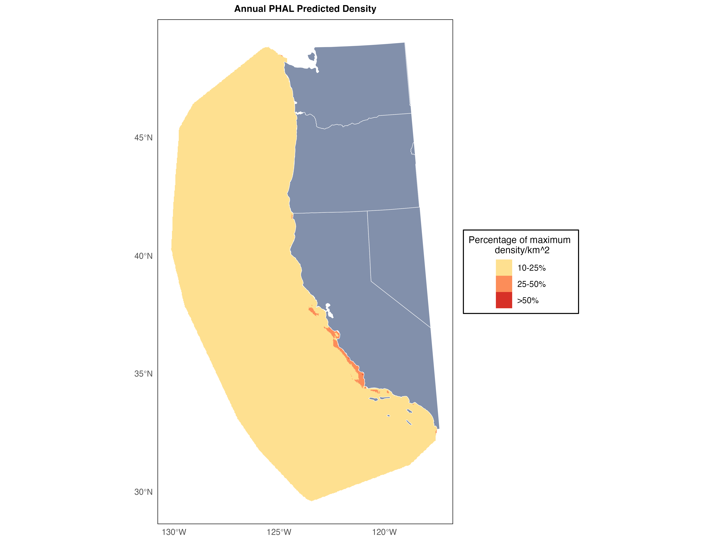
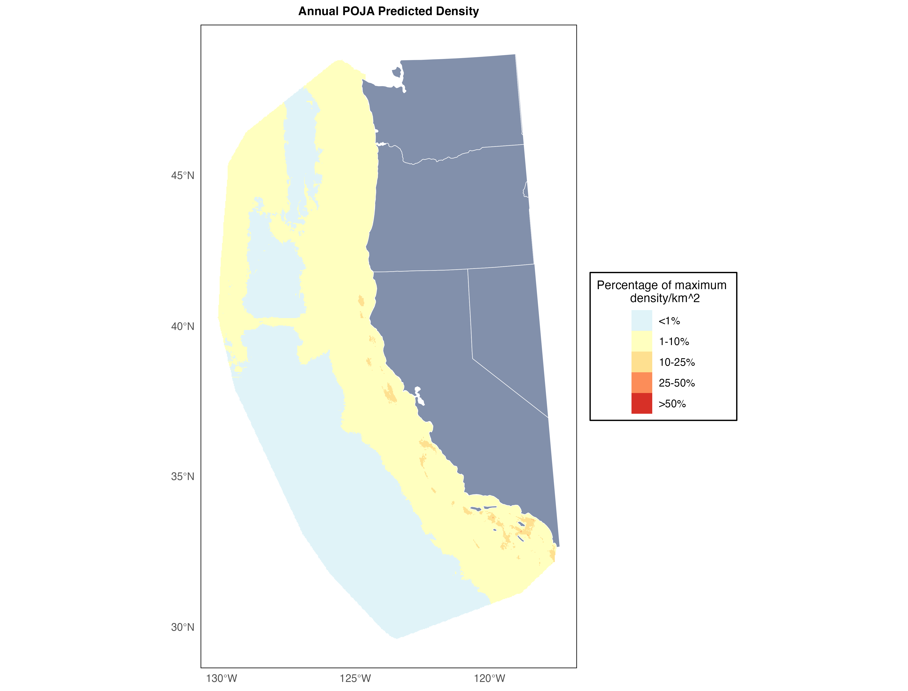
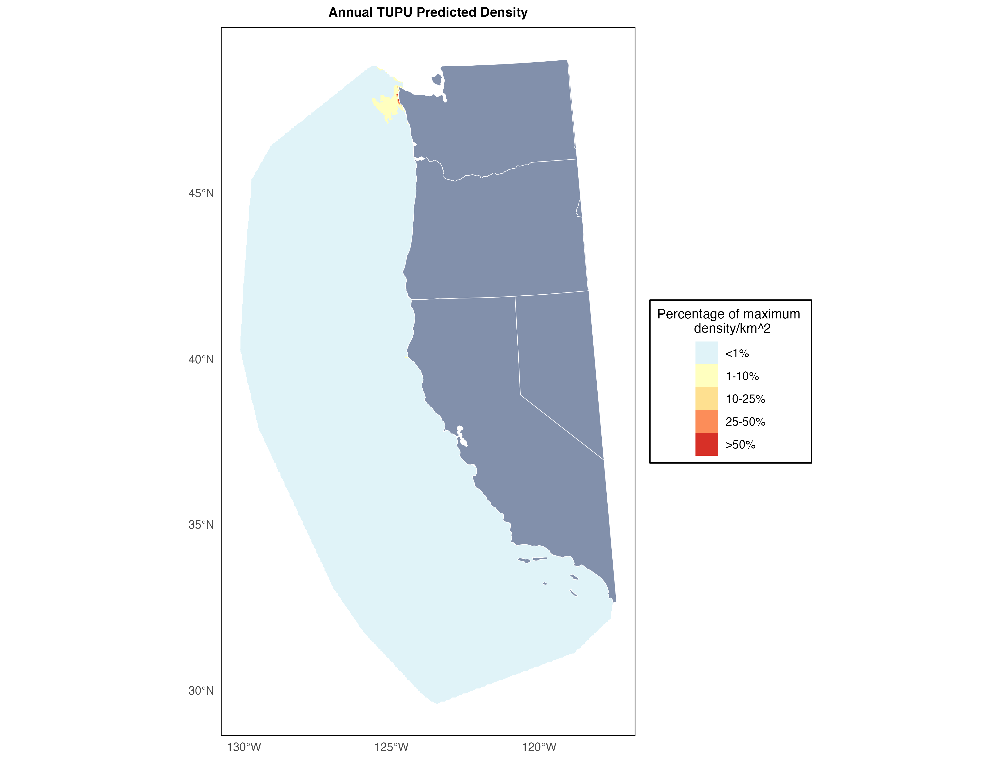
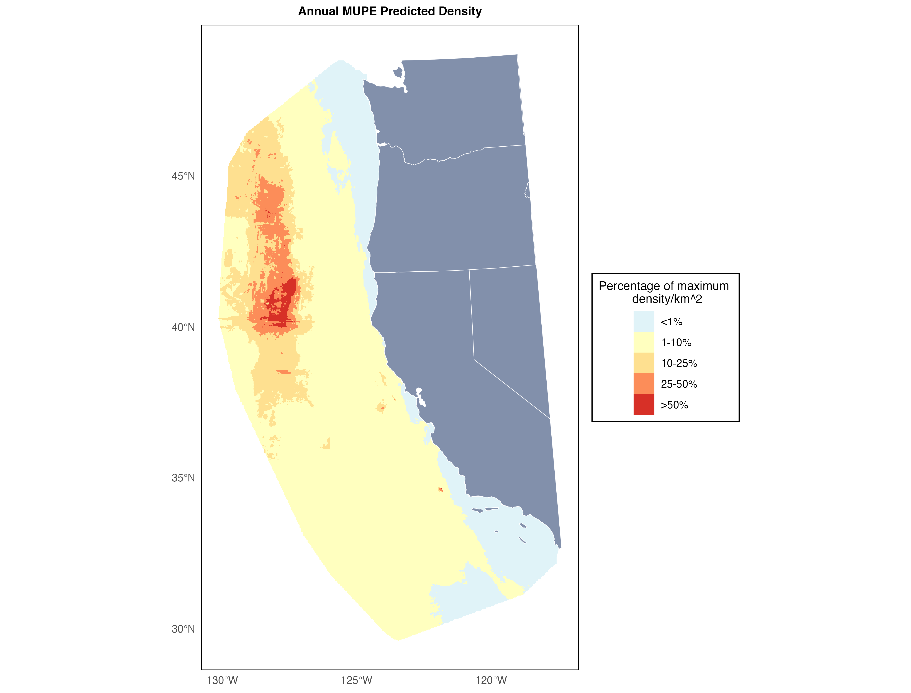
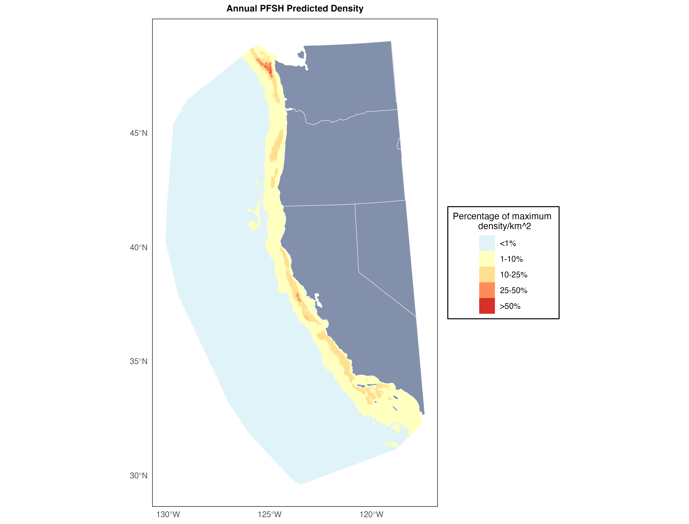

Rare California Seabird Distribution Expert Elicitation Exercise
Thank you for helping us with this work! We hope that this exercise should take you less than an hour to complete. Please read the instructions below carefully before filling out your responses in the spreadsheet that has been provided to you via email.
There are multiple components of vulnerability to offshore wind energy for seabird species. We have existing tools that help us identify where birds are (i.e., SDMs such as Leirness et al., 2021), how sensitive birds may be to collision or displacement impacts (i.e., vulnerability indices such as Kelsey et al., 2018), and ways of describing bird population status (i.e., IUCN Red List status, state and federal listings, etc). We are developing a tool to combine these existing understandings of the components of vulnerability to wind energy development to rank species vulnerability based on the placement of lease areas in any given region developing wind energy. The result will aid regional scale prioritization of mitigation and research efforts.
Utility of Expert Elicitation Exercise
We need your help estimating the distributions of three threatened species: Short-tailed Albatross, Hawaiian Petrel, and Townsend’s Storm Petrel. These species were not modeled by Leirness et al., 2021 due to limited numbers of observations in the POCS region - we are trying to use expert elicitation to produce estimates of their distributions so that we may include them in the prioritization tool.
The Leirness et al. (2021) species distribution models (SDMs) of seabirds on the Pacific Outer Continental Shelf were produced by season when enough data was present for a given species and season to produce a raster map with an estimate of density per km^2 grid cell. To assess exposure over the course of the entire year, we have combined the models for each season available (assuming a zero presence in seasons not modeled) into an annual model. We then overlay the vector outlines of the wind energy areas under consideration and calculate what proportion much of the summed regional density is found within the development zones. Without species distribution models for Short-tailed Albatross, Hawaiian Petrel, and Townsend’s Storm Petrel, we cannot calculate the proportion of their regional distribution that overlaps with the development zones. We are asking you to use your experience as a seabird biologist and your knowledge of the life histories and habitat usage of seabirds to identify which of the existing SDMs you would expect to be most similar to the distributions of the three unknown species. We will use your answers to weight and sum these existing models to produce estimated maps for each of the unknown species. We will also report uncertainty in our estimates will be based on how similar estimates are across experts for each species.
Instructions
Please open the qualtrics survey here. You will use the species maps below on this page to inform the answers that you’ll provide on the spreadsheet, so we recommend opening both pages side by side.
The survey has three main pages, one for each of the species we don’t have distribution estimates for. Each page of the survey will ask you to identify which distributions of species from the Leirness models you expect to be most like the unknown species. Use the maps below on this page to inform your answers. TIP: Once you scroll to the maps a full table of contents will populate in the side bar - use this to quickly flip between maps to compare them.
Use the sliding scale bars next to each model name to weight how well you think the distribution represented by model represents the unknown species (feel free to leave as many as you’d like at 0% if you don’t think they represent the unknown well). We will use your responses to produce new maps for the unknown species by combining the models you identify as most similar to each species based on the weights you provide. For this reason, the survey won’t let you click to the next page until you provide answers that sum to 100%.
Finally, please provide your name, contact info, and affiliation before you submit the survey. We won’t link your names to your responses in our final product, but will reach out to you to provide you with final results and ask if you’d like to be listed in the acknowledgements.
Examples using fake species:
Example 1:
Based on your observations of the Silvery-cheeked Diving Petrel on at-sea surveys, you think it has a relatively coastal distribution with some particularly concentrated distributions around the Columbia River mouth. You drag the slider in the qualtrics survey for the Marbled Murrelet model to 70% and the slider for the Double-crested Cormorant model to 30% and leave the rest at 0%. The distribution of the Silvery-cheeked Diving Petrel = 0.7(MAMU) + 0.3(DCCO).

Example 2:
The Soft-plumaged Skua is critically endangered and you’ve never seen one at sea, but you estimate based on your understanding of its life history that when it is found in the POCS region its habitat needs would be most similar to its closest relatives in the region. You drag the slider in the qualtrics survey for South Polar Skua to 50%, the slider for Pomarine Jaeger to 25%, and the slider for the combined Parasitic and Long-tailed Jaeger model to 25% and leave the rest at 0%. The distribution of the Soft-plumaged Skua = 0.5(SPSK) + 0.25(POJA) + 0.25(PAJA-LTJA).

Example 3:
You have absolutely no idea what the distribution of the Fluttering Booby would be within the region. Their distributions and life histories are very poorly understood and it’s not your area of expertise. You drag the slider in the qualtrics survey for Laysan Albatross to 50% and the slider for the combined Phalarope Model to 50% to try to represent a pretty even density throughout the region since you’re not comfortable making any guesses about where you might expect their population to be concentrated. You leave the rest at 0%. The distribution of the Fluttering Booby = 0.5(LAAL) + 0.5(PHAL).

Important notes:
For simplicity, the maps provided below have combined any seasonal models that were produced for the species into an annual model (so they effectively represent the averaged annual distribution for each species/group) - we recognize that species distributions vary dramatically seasonally, but please do your best in providing your answers to try to provide your estimation of the averaged annual distribution for the unknown species.
We ask that you complete every page of the survey. It’s okay if your confidence in your estimates vary between species - we’re calculating uncertainty in our final estimates based on the range of the answers provided across experts, and so it will be important for the analysis to have the same number of estimates for each species. You’re welcome to add notes qualifying your answers or your confidence in your estimates at the bottom of each page.
Due to data limitations or high proportions of unidentified observations (e.g., “loon sp.”) for particular taxa, some of the original models were produced for species groups instead of individual species. You can read more about this process here if you’re interested, but as you’re providing your responses please feel free to select whichever models you think best represent the unknown species you’re providing answers for regardless of if it was produced for an individual species or a species group.
Species maps
Use the maps below to inform your responses to the qualtrics survey.
Because we’re using these maps simply to calculate what proportion of each species’ usage of the region overlaps with the development areas, we have controlled for abundance in the below maps to simplify your interpretation and comparisons between them. You can interpret the maps simply as a visual representation of relative density for that species/group across the POCS region, with each grid cell colored according to what proportion of the maximum projected density for a single grid cell it contains.
Note that in some cases distributions are highly concentrated in coastal regions and it makes the visualization of distribution challenging - we recommend zooming in on coastal regions if a map looks blank at a glance.
Combined Scoter Model
Combined Phalarope Model

Combined Parasitic & Long-tailed Jaeger Model

Pomarine Jaeger

South Polar Skua
Rhinoceros Auklet

Tufted Puffin

Cassin’s Auklet

Marbled Murrelet

Pigeon Guillemot
Common Murre
Ancient Murrelet
Combined Scripp’s, Guadalupe, & Craveri’s Murrelet Model

Black-legged Kittiwake

Sabine’s Gull

Bonaparte’s Gull

Heermann’s Gull
Combined Western & Glaucous-winged Gull Model

California Gull

Combined Herring & Iceland Gull Model

Caspian Tern
Combined Common & Arctic Tern Model

Combined Royal & Elegant Tern Model

Combined Western & Clark’s Grebe Model
Red-throated Loon

Common Loon
Combined Loon Model (includes Pacific Loon)
Laysan Albatross

Black-footed Albatross
Fork-tailed Storm-Petrel

Leach’s Storm Petrel

Ashy Storm-Petrel
Black Storm-Petrel

Northern Fulmar

Murphy’s Petrel

Cook’s Petrel

Pink-footed Shearwater

Buller’s Shearwater

Combined Short-tailed, Sooty, & Flesh-footed Shearwater Model
Black-vented Shearwater

Brandt’s Cormorant
Pelagic Cormorant

Double-crested Cormorant

Brown Pelican